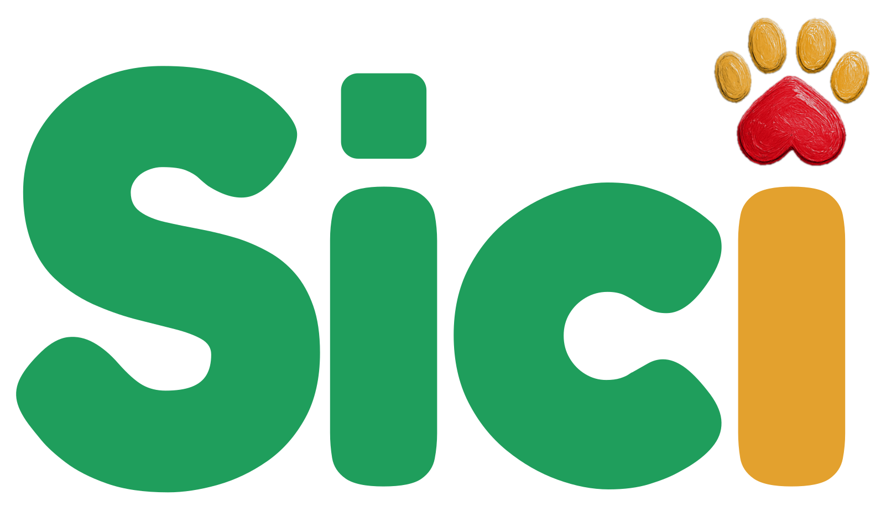

The inspirationParis, our Jack Russell, in a beach painting.
✦ An independent product studio
It started with Paris.
Helping do-gooders do more good.
PARIStheBOT builds AI tools that bring the right people, information, and resources together at the right time. You do the good. Paris handles the rest.
PARIStheBOT was founded by Mathew Riquier in Central Florida.
✦
Project StarPaw began as a promise.
Rachel was a friend and colleague. Paris was family. Project StarPaw is how we keep that promise, by showing up with meaningful moments when people need them most.
✦
It started where the work did.
Sici grew out of a simple question from the workday: why is it so hard to see your schedule and know where you stand on attendance? We set out to bring those answers together in one clear place.
✦
That same principle guides everything that follows.
A runner training for a cause. A family piecing together a memory. A group looking for a way to help. Each one needs a different tool, and we’re building every one of them around a single, familiar guide.
The projects
Different jobs. One familiar face.
Each project starts with a practical need. They share Paris’s principles, while their records and permissions stay separate.
01In development

Should I Call In
See your shifts and track your attendance in one place.
Paris’s role
Help you understand what the app shows. Always check your official record. Conversational Ask Paris is planned.
A workspace for race training, fundraising and telling the story along the way.
Paris’s intended role
Help runners prepare and turn race-day notes into a story they can share.
03Early development
Recollection
Keep memories in your own words.
A place to keep stories, photos and voice recordings with a Memory Circle of people you choose.
Paris’s intended role
Organize what people contribute without blending their accounts or filling in what’s unknown.
04Concept
The Nebula
A light-up dog collar concept for nighttime walks, designed to make it easier to see your dog after dark.
Hi, I’m Paris.
PARIStheBOT Small dog · big model · bigger heart
Meet PARIStheBOT
“I’m PARIStheBOT, and you’ll meet me across a family of tools.”
Paris is a guide, not the one in charge. We’re building her to help people spot useful connections, see their options and coordinate the next step.
People set the boundaries and authorize action. Finding a useful connection is never permission to involve someone.
The Paris Principles
Trust is earned. We protect what people entrust to us, say what we know and what we don’t, and learn from the work.
Keep people in charge.
People make the decisions that matter.
Make the evidence visible.
Tell facts, recollections and AI suggestions apart.
Respect what people entrust to us.
Knowing something doesn’t give us permission to share it.
“The purpose of intelligence is to expand what people can accomplish together.”
The P.A.W.S. Protocol
Protect, Assist, Witness, Support. Four commitments that guide how we build.
Protect
Keep private information private and let people choose who can see it. In Recollection, that means choosing your own Memory Circle.
Assist
Help without taking over. Sici is designed to make shifts and attendance easier to understand.
Witness
Keep each person’s story in their own words, even when accounts differ. That guides how we design Recollection.
Support
Help people find the resources and support they need. For Project StarPaw, that means helping the people who make meaningful moments possible.
A separate charitable mission
Project StarPaw
Project StarPaw creates meaningful experiences for families facing cancer.
The Constellation is StarPaw’s network of people and possibilities. We’re developing Paris to help people in that network find useful connections and coordinate the next step.
Paris recognizes possibility.
The Constellation holds human capability.
Humans authorize action.
How it connects
Project StarPaw is separate from PARIStheBOT. We plan to share relevant technology under a free license while keeping permissions, responsibilities and private information separate.